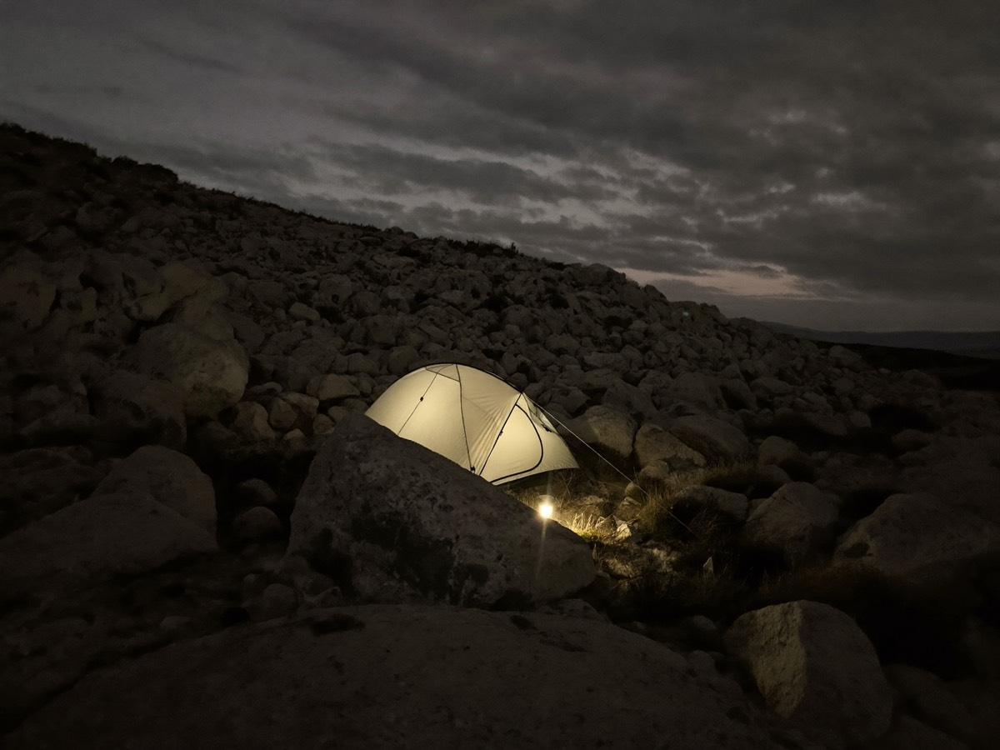
01 T+0:00
Read the site
Find the flattest lee you can and note the prevailing wind. The door goes cross-wind; the tail goes into it. Clear rocks the size of a fist — they find your hip at 3am.
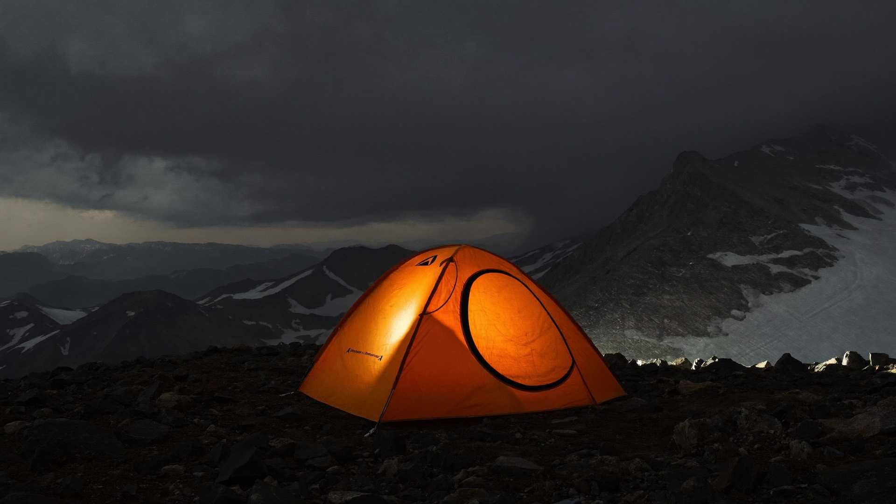
MODULAR SHELTER SYSTEMS
One system, three terrains, every part replaceable in the field. Pitch it in a whiteout, patch it in the dark, and trust it when the forecast turns.
READ THE GROUND
The same hub, poles and fly reconfigure for three regimes. Pick the ground and the whole rig re-tensions — the weather over the ridge changes with it.
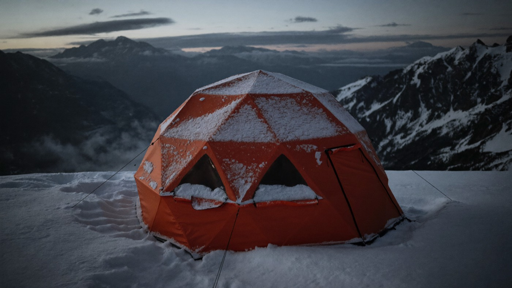
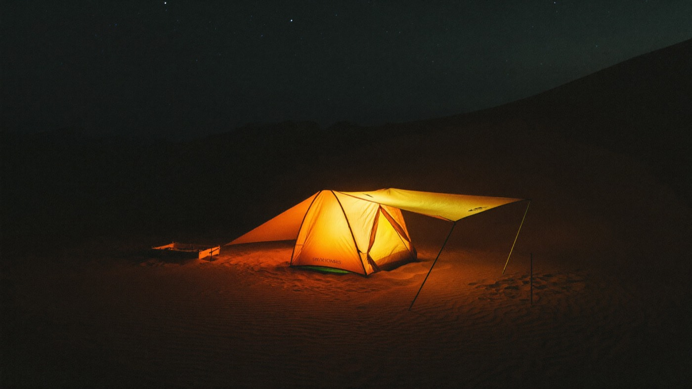
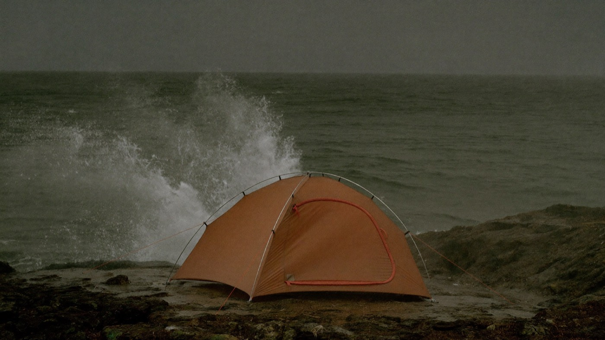
HOW IT PITCHES
Every FARSIDE pitches the same way, gloves on, in the order the weather cares about. Follow the rail — it advances on its own, or jump to any step.

01 T+0:00
Find the flattest lee you can and note the prevailing wind. The door goes cross-wind; the tail goes into it. Clear rocks the size of a fist — they find your hip at 3am.
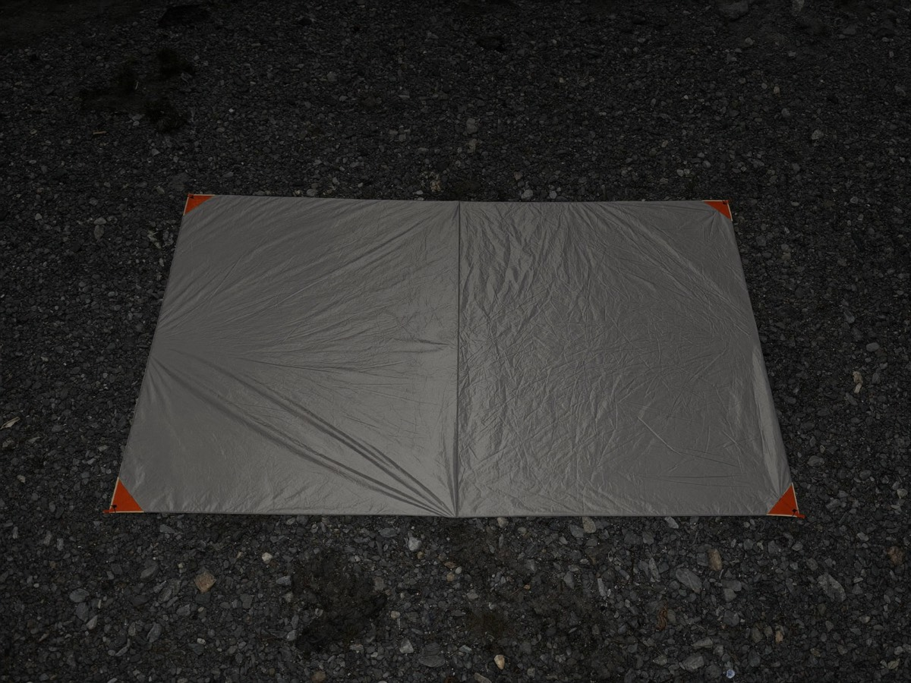
02 T+0:40
Roll the footprint printed-side down and square it to the wind. Its cut is 2 cm inside the fly so run-off sheds past it, never under you.
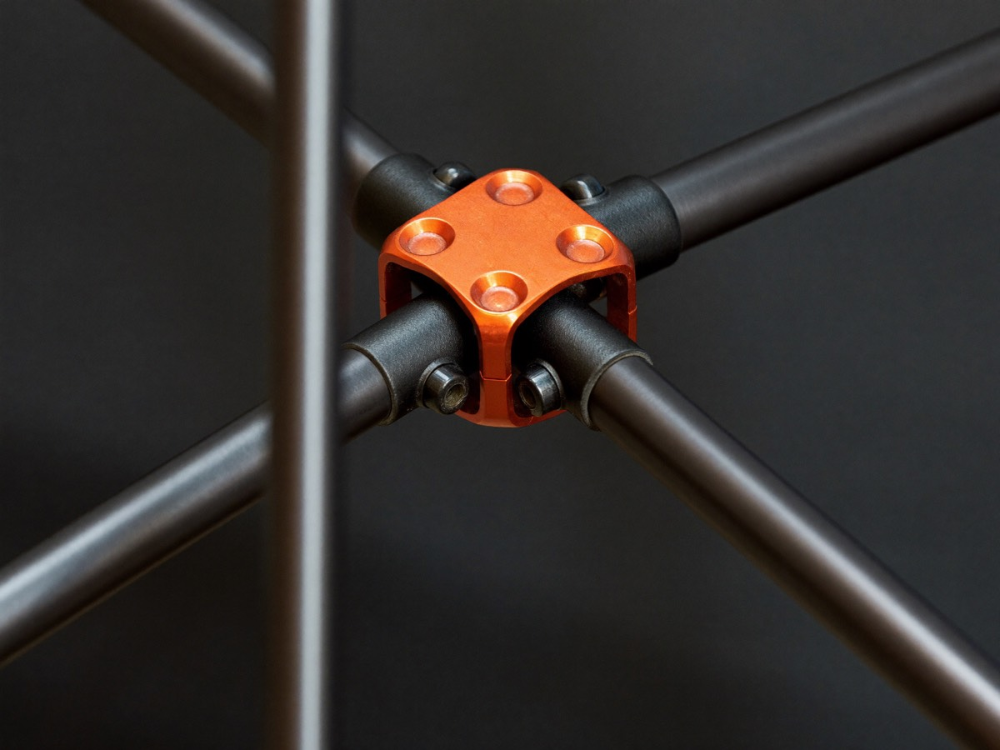
03 T+1:30
Seat the four poles into the colour-keyed hub until each collar clicks. The hub is the one part that carries the whole load path — feel the click, don't just look.
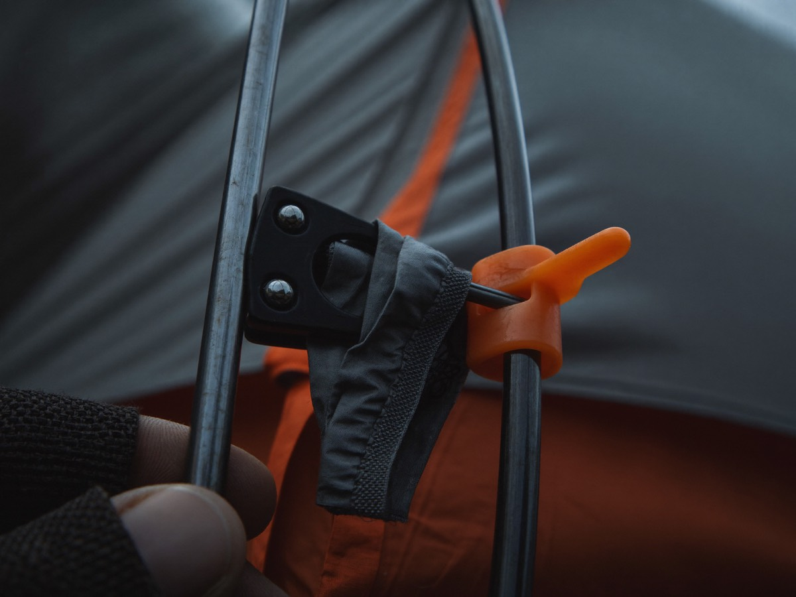
04 T+2:20
Work the clips from the hub outward so tension spreads evenly. The canopy stands on its own now — a good sign it's clipped square is a taut ridge line with no wrinkles.
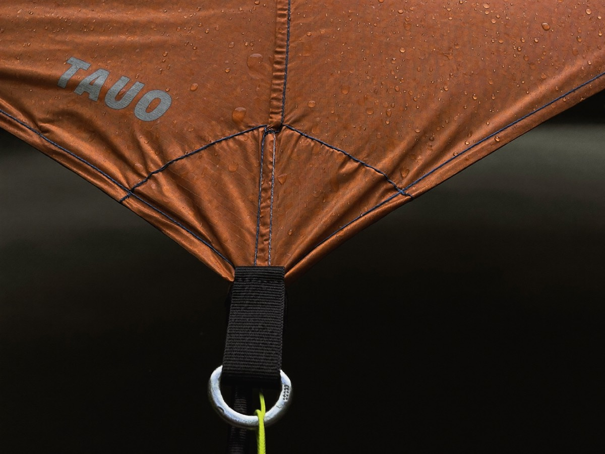
05 T+3:10
Throw the fly, match the colour tabs, and pull each corner to a firm ring. Leave a hand's-width gap at the hem for airflow unless it's blowing — then skirt it down.
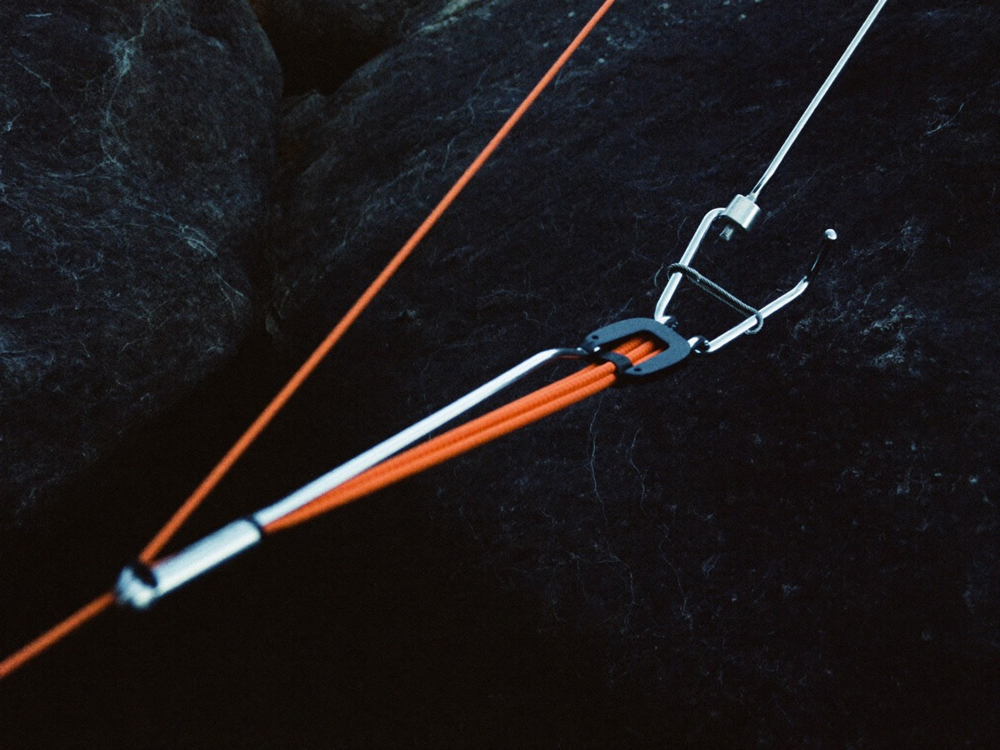
06 T+4:15
Drive stakes at 45° away from the tent and run every guy line, even in calm. Weather turns while you sleep — a guyed-out FARSIDE holds through the gust that wakes you.
THREE SYSTEMS
Solo, duo or basecamp — same hub, same repair kit, same field parts. Size up without relearning a single knot.
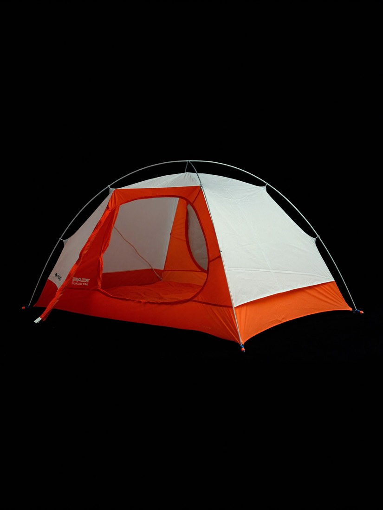
FS-1
The fast-and-light end of the platform. One door, one vestibule, a footprint that fits a ledge.
$640
Spec this buildExpedition pick
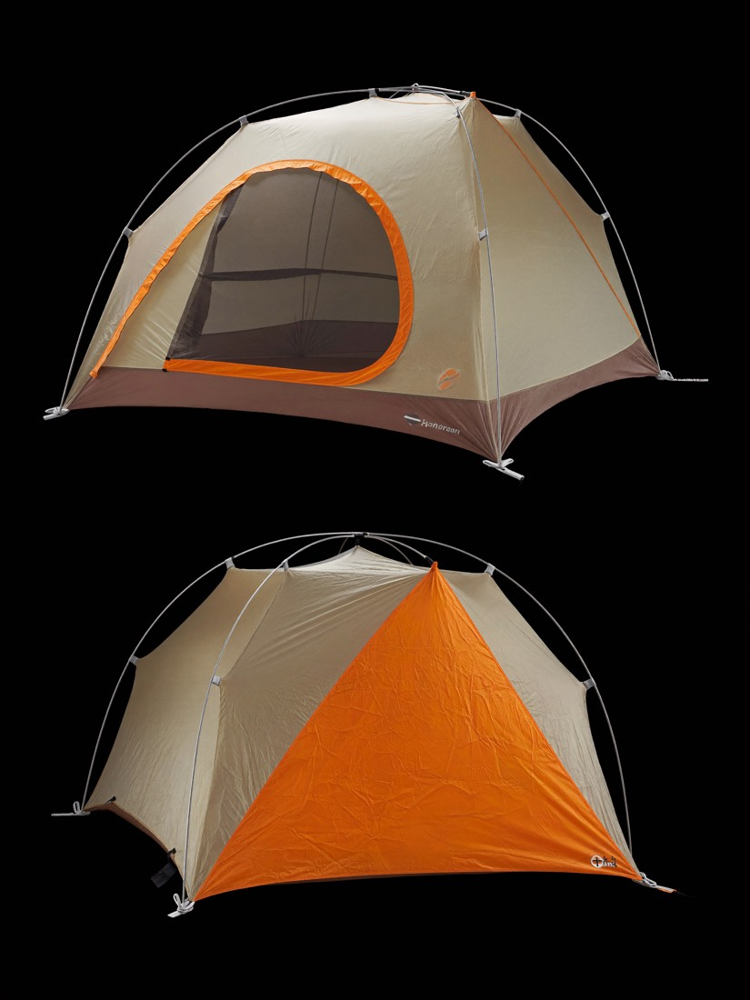
FS-2
Two doors, two vestibules, room to sit out a storm day. The size most expeditions actually carry.
$890
Spec this build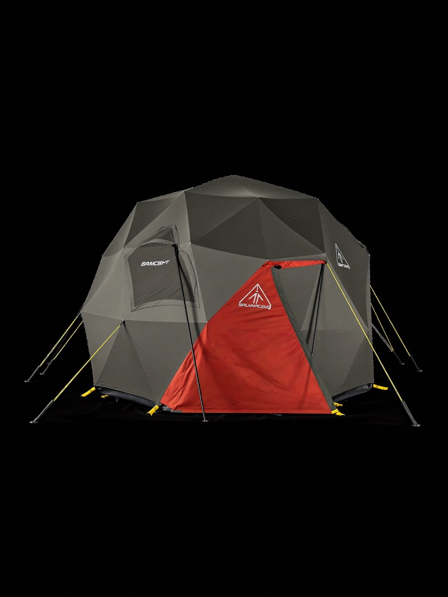
FS-4
A stand-up dome with a cooking porch, built to stay put for weeks. Your fixed point when everything else moves.
$2,400
Spec this buildPAST THE TRAILHEAD
Every build includes the basics for keeping it in the field. Add a plan when the route gets serious and the desk stays on the line.
Standard
Included
Guided
$9/mo
Expedition
$39/mo